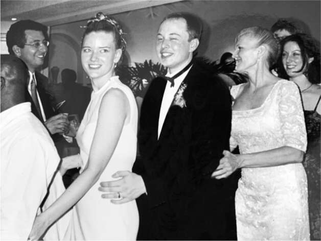
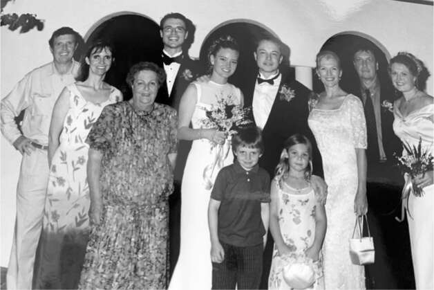
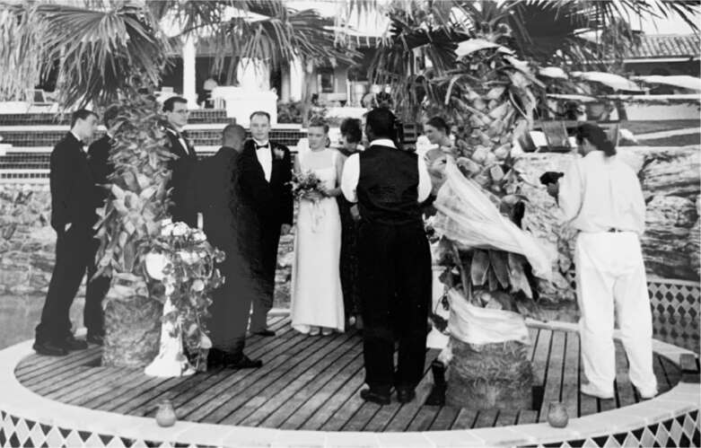

Chuyện tình lãng mạn
Khi Musk ngồi vào ghế lái chiếc McLaren trị giá hàng triệu đô la mới của mình, anh nói với phóng viên CNN đang quay phim: "Phần thưởng thực sự là cảm giác hài lòng khi tạo ra một công ty." Lúc đó, một cô gái trẻ đẹp, mảnh mai, là bạn gái của anh, vòng tay ôm anh. "Vâng, vâng, nhưng cả chiếc xe nữa," cô thủ thỉ. "Chiếc xe. Hãy thành thật nào." Musk có vẻ hơi xấu hổ và cúi xuống xem tin nhắn trên điện thoại.
Tên cô ấy là Justine Wilson, mặc dù khi anh gặp cô ấy lần đầu tại Đại học Queen’s, cô ấy vẫn dùng tên khai sinh đơn giản hơn là Jennifer. Giống như Musk, cô ấy là một mọt sách khi còn nhỏ, mặc dù cô ấy thích tiểu thuyết giả tưởng đen tối hơn là khoa học viễn tưởng. Cô lớn lên ở một thị trấn nhỏ ven sông phía đông bắc Toronto và mơ ước trở thành nhà văn. Với mái tóc buông xõa và nụ cười bí ẩn, cô toát lên vẻ rạng rỡ và quyến rũ cùng một lúc, giống như một nhân vật bước ra từ cuốn tiểu thuyết lãng mạn mà cô hy vọng sẽ viết một ngày nào đó.
Cô gặp Musk khi cô là sinh viên năm nhất và anh là sinh viên năm hai tại Queen’s. Sau khi nhìn thấy cô tại một bữa tiệc, anh mời cô đi ăn kem. Cô đồng ý đi với anh vào thứ Ba tuần sau, nhưng khi anh đến phòng cô, cô đã đi mất. "Vị kem yêu thích của cô ấy là gì?" anh hỏi một người bạn của cô. Anh được cho biết là vani-sôcôla-chip. Vì vậy, anh mua một cây kem ốc quế và đi quanh khuôn viên trường cho đến khi tìm thấy cô đang học tiếng Tây Ban Nha ở trung tâm sinh viên. "Tôi nghĩ đây là vị yêu thích của em," anh nói, đưa cho cô cây kem đang chảy.
"Anh ấy không phải là người dễ dàng chấp nhận lời từ chối," cô nói.
Lúc đó, Justine đang chia tay với một người có vẻ ngoài ngầu hơn, một nhà văn để chỏm râu dưới cằm. "Tôi nghĩ chỏm râu đó là dấu hiệu rõ ràng cho thấy anh chàng đó là một kẻ ngốc," Musk nói. "Vì vậy, tôi đã thuyết phục cô ấy hẹn hò với tôi." Anh nói với cô, "Em có một ngọn lửa trong tâm hồn. Anh thấy mình trong em."
Cô ấn tượng bởi khát vọng của anh. “Không giống những người tham vọng khác, anh ấy chưa bao giờ nói về việc kiếm tiền,” cô kể. “Anh ấy cho rằng mình sẽ hoặc giàu có hoặc trắng tay, không có gì ở giữa. Điều anh ấy quan tâm là những vấn đề anh ấy muốn giải quyết.” Ý chí kiên cường của anh – dù là để hẹn hò với cô hay để chế tạo xe điện – đã mê hoặc cô. “Ngay cả khi nghe có vẻ hoang đường, bạn vẫn sẽ tin anh ấy bởi vì chính anh ấy cũng tin.”
Họ chỉ hẹn hò vài lần trước khi anh rời Queen’s đến Penn, nhưng vẫn giữ liên lạc, và thỉnh thoảng anh gửi hoa hồng cho cô. Cô dành một năm dạy học ở Nhật Bản và bỏ cái tên Jennifer “vì nó quá phổ biến và là tên của rất nhiều đội trưởng đội cổ vũ.” Khi trở về Canada, cô nói với chị gái mình, “Nếu Elon gọi lại, chắc mình sẽ nhận lời. Có lẽ mình đã bỏ lỡ điều gì đó.” Cuộc gọi đến khi anh đến New York gặp tờ Times về Zip2. Anh mời cô đến đó cùng mình. Cuối tuần diễn ra tốt đẹp đến nỗi anh mời cô bay về California cùng anh. Cô đồng ý.
Lúc đó anh vẫn chưa bán Zip2, nên họ sống trong căn hộ ở Palo Alto cùng hai người bạn cùng nhà và một chú chó dachshund chưa được huấn luyện tên Bowie, đặt theo tên David. Phần lớn thời gian cô ru rú trong phòng ngủ, viết lách và không giao thiệp. “Bạn bè không muốn đến nhà tôi chơi vì Justine quá khó chịu,” anh nói. Kimbal không thể chịu đựng được cô. “Nếu ai đó thiếu tự tin, họ có thể rất khó ưa,” anh nói. Khi Musk hỏi mẹ mình nghĩ gì về Justine, bà thẳng thừng như thường lệ: “Cô ta chẳng có gì đáng khen cả.”
Nhưng Musk, người thích sự sắc cạnh trong các mối quan hệ, đã bị cô chinh phục. Justine nhớ lại, một buổi tối khi ăn tối, anh hỏi cô muốn có bao nhiêu con. “Một hoặc hai,” cô trả lời, “nhưng nếu đủ tiền thuê bảo mẫu, mình muốn có bốn.”
“Đó là sự khác biệt giữa em và anh,” anh nói. “Anh cứ mặc định là sẽ có bảo mẫu.” Rồi anh đưa tay b cradle và nói, “Em bé.” Anh đã rất muốn có con.
Không lâu sau đó, anh bán Zip2 và mua chiếc McLaren. Bỗng nhiên có tiền thuê bảo mẫu. Cô nói đùa, có chút lo lắng, rằng có lẽ anh sẽ không bỏ cô để theo một người mẫu xinh đẹp. Thay vào đó, anh quỳ gối trên vỉa hè trước nhà, lấy ra một chiếc nhẫn và cầu hôn cô, giống như trong tiểu thuyết lãng mạn.
Cả hai đều tràn đầy năng lượng bởi những màn kịch tính, và họ phát triển bằng cách tranh cãi. “Dù rất yêu tôi, anh ấy không bao giờ ngần ngại cho tôi biết rằng tôi đã sai về điều gì đó,” cô nói. “Và tôi sẽ phản kháng. Tôi nhận ra rằng tôi có thể nói bất cứ điều gì với anh ấy, và anh ấy không hề nao núng.” Một hôm, họ đang ở cùng một người bạn trong McDonald’s và bắt đầu cãi nhau ầm ĩ. “Bạn tôi rất xấu hổ, nhưng Elon và tôi đã quen với việc cãi nhau lớn tiếng ở nơi công cộng. Anh ấy có một phần tính cách hiếu chiến. Tôi không nghĩ bạn có thể ở trong một mối quan hệ với Elon mà không cãi nhau.”
Trong một chuyến đi đến Paris, họ đến xem các tấm thảm Lady and the Unicorn tại Musée de Cluny. Justine bắt đầu mô tả những gì khiến cô xúc động, và cô đưa ra một cách giải thích mang tính tâm linh liên quan đến con kỳ lân như một hình tượng giống Chúa Kitô. Musk gọi đó là “ngu ngốc.” Họ bắt đầu tranh cãi dữ dội về biểu tượng Cơ đốc giáo. “Anh ấy rất kiên quyết và tức giận vì tôi không biết mình đang nói gì, rằng tôi ngu ngốc và điên rồ,” cô nói. “Giống như những điều anh ấy kể rằng cha anh đã nói với anh ấy.”
Khi anh ấy nói với tôi rằng anh ấy sẽ cưới cô ấy, tôi đã can ngăn," Kimbal nói. "Tôi đã nói, 'Đừng, anh không nên làm vậy, đây không phải là người phù hợp với anh.'" Navaid Farooq, người đã ở cùng Musk tại bữa tiệc khi anh ấy gặp Justine lần đầu, cũng cố gắng ngăn cản anh ấy. Nhưng Musk yêu Justine và cả những sóng gió. Đám cưới được lên kế hoạch vào một ngày cuối tuần tháng 1 năm 2000 trên đảo Saint Martin thuộc vùng Caribbean.
Musk bay đến một ngày trước đó với một thỏa thuận tiền hôn nhân mà luật sư của anh đã soạn thảo. Anh và Justine lái xe quanh đảo để tìm một công chứng viên chứng kiến vào tối thứ Sáu, nhưng họ không tìm thấy ai. Cô hứa sẽ ký vào đó khi họ quay lại (cuối cùng cô ấy đã làm vậy hai tuần sau đó), nhưng cuộc trò chuyện đã gây ra nhiều căng thẳng. "Tôi nghĩ anh ấy cảm thấy rất lo lắng về việc kết hôn mà chưa ký được thỏa thuận này", cô nói. Điều đó dẫn đến một cuộc cãi vã, và Justine xuống xe, bỏ đi tìm bạn bè. Cuối đêm hôm đó, họ quay lại biệt thự nhưng vẫn tiếp tục cãi nhau. "Các biệt thự đều thoáng đãng, nên tất cả chúng tôi đều có thể nghe thấy tiếng cãi vã", Farooq nói, "và chúng tôi không biết phải làm gì." Có lúc Musk bỏ đi và nói với mẹ rằng đám cưới đã bị hủy bỏ. Bà cảm thấy nhẹ nhõm. "Giờ thì con sẽ không còn đau khổ nữa", bà nói với anh. Nhưng sau đó anh ấy đã thay đổi ý định và quay lại với Justine.
Sự căng thẳng tiếp tục vào ngày hôm sau. Kimbal và Farooq cố gắng thuyết phục Musk để họ đưa anh ấy đến sân bay để anh ấy có thể trốn thoát. Họ càng cố gắng thuyết phục, anh ấy càng trở nên cứng rắn. "Không, tôi sẽ cưới cô ấy", anh tuyên bố.
Bề ngoài, buổi lễ bên hồ bơi của khách sạn diễn ra trong không khí vui vẻ. Justine trông rạng rỡ trong chiếc váy trắng không tay và vương miện hoa trắng, còn Musk trông bảnh bao trong bộ tuxedo may đo. Cả Maye và Errol đều có mặt, và họ thậm chí còn chụp ảnh cùng nhau. Sau bữa tối, mọi người cùng tham gia điệu nhảy conga, sau đó Elon và Justine khiêu vũ bài đầu tiên. Anh đặt cả hai tay lên eo cô. Cô vòng tay quanh cổ anh. Họ mỉm cười và hôn nhau. Rồi, khi họ đang khiêu vũ, anh thì thầm vào tai cô một lời nhắc nhở: "Anh là người thống trị trong mối quan hệ này."

Justine, Elon và Maye

Gia đình, với Errol và Maye đứng thứ hai và thứ ba từ phải sang
